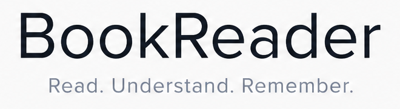
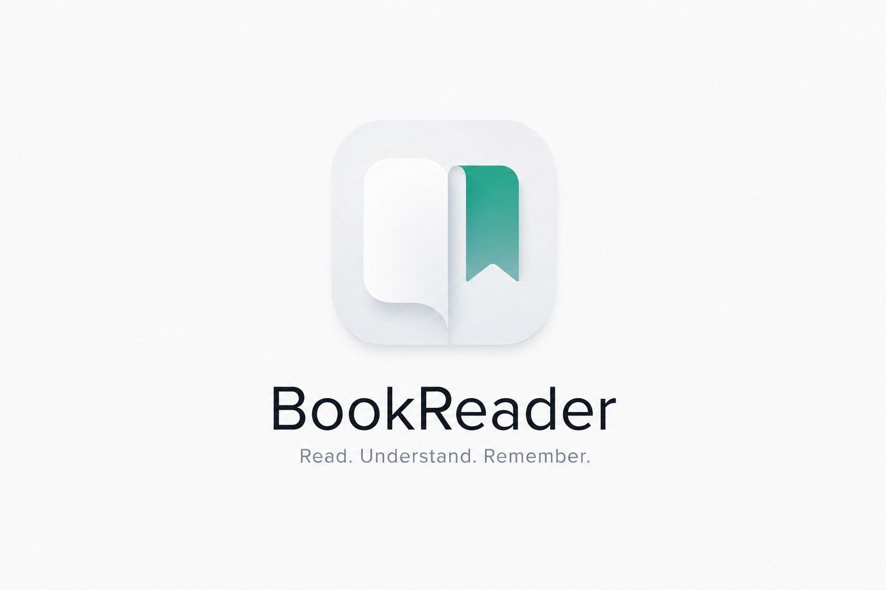

Variante oscura — recomendada para icono
192
128
64
32 · favicon
16 · pestaña
maskable
BookReader — Lector con agente
Variante clara — fiel al original (marketing)
192
128
64
32 · se disuelve
maskable
BookReader — Lector con agente
Lockup y wordmark (recorte del raster original)
lockup vertical

wordmark
Original entregado

logo_bookreader.png · 1536×1024